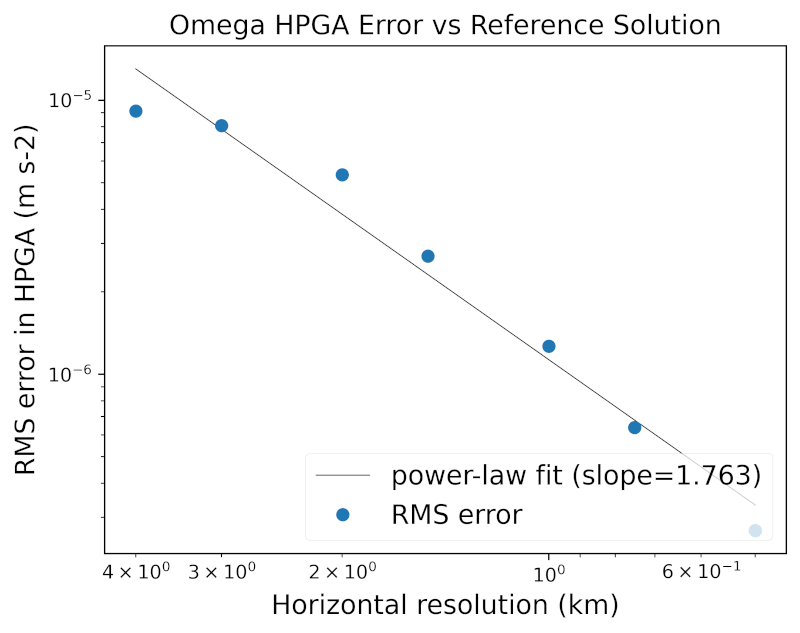

horizontal pressure gradient
description
The horiz_press_grad tasks in polaris.tasks.ocean.horiz_press_grad
exercise Omega’s hydrostatic pressure-gradient acceleration (HPGA)
for a two-column configuration with prescribed horizontal gradients.
The analysis uses two different baselines, each with a different purpose:
an analytic reference solution evaluated inside the
analysisstep that is used as the main accuracy target, anda Python-computed two-column HPGA diagnostic from the
initstep that is used as a consistency check against Omega.
Each task includes:
an
initstep at each horizontal/vertical resolution pair,a single-time-step
forwardrun at each horizontal resolution, andan
analysisstep that evaluates the analytic reference and compares Omega output with both the reference and the Python-initialized HPGA.
The tasks currently provided are:
ocean/column/horiz_press_grad/salinity_gradient
ocean/column/horiz_press_grad/temperature_gradient
ocean/column/horiz_press_grad/ztilde_gradient
ocean/column/horiz_press_grad/surface_pressure_gradient
ocean/column/horiz_press_grad/hydrostatic_consistency
ocean/column/horiz_press_grad/hydrostatic_consistency_linear
ocean/column/horiz_press_grad/bathymetry_step
ocean/column/horiz_press_grad/bathymetry_step_linear
The first four impose a horizontal gradient and measure convergence toward the analytic reference. The last four are resting states whose true HPGA is identically zero, so the model’s HPGA is entirely error and no reference solution is involved; see the resting-state variants.


The point of these tasks is not only to verify that Omega can reproduce the same discrete answer as the Python initialization, but also to measure how the two-column discretization converges toward a more accurate non-local approximation of the continuous hydrostatic pressure-gradient force.
Each variant isolates a different way a horizontal pressure gradient can arise:
salinity_gradientandtemperature_gradientkeep the layers level and impose a horizontal density gradient, so the HPGA comes entirely from the baroclinic term.ztilde_gradientkeeps the water properties horizontally uniform and tilts the z-tilde interfaces, so the HPGA comes entirely from the geometric (layer-slope) term. This is the classic pressure-gradient-error configuration for a terrain-following coordinate.surface_pressure_gradientimposes a horizontally varying surface pressure, as under a floating ice shelf, which tilts the layers through the surface boundary condition rather than through the prescribed z-tilde profile.
why the surface_pressure_gradient variant
Under an ice shelf the ocean surface is not a free surface at zero gauge pressure: it carries the weight of the ice above it, and the sea surface is depressed by roughly \(-p_s / (\rho_0 g)\). Wherever the ice thickness varies, both the surface pressure \(p_s\) and the sea-surface height \(\eta\) therefore vary horizontally, and in the p-star coordinate that depression also compresses the column so that every layer below is tilted, even though the prescribed z-tilde profile is level.
This is precisely the regime in which pressure-gradient errors have historically been worst in terrain-following ocean models. Two things happen at once: the layers acquire a steep slope, and the surface boundary term becomes large. In the reference expression below, the two pieces of that boundary term, \(-g\,\eta'\) and \(+g\,\rho_0\,\alpha(\tilde z_s)\,\tilde z_s'\), nearly cancel because \(\rho_0 \alpha \approx 1\), so the surviving HPGA is a small residual between two large numbers. Any inconsistency in how Omega, the Python initialization, or the reference solution treat the surface would show up immediately as a large error that fails to converge.
The variant is therefore meant to demonstrate that
Omega robustly supports a nonzero surface pressure and the corresponding depressed, sloping sea surface;
Omega, the Python two-column diagnostic, and the analytic reference all treat the surface boundary term consistently; and
Omega still converges to the reference at the same rate, and to comparable accuracy, as in the variants with a flat, unloaded surface.
Together these give confidence that the HPGA will remain consistent beneath real
ice shelves, where layers can be steeply sloped. The default configuration is
sized for that application: surface_pressure_mid = 8.99e5 Pa is the weight of
about 100 m of Antarctic ice, and surface_pressure_grad = 8.99e3 Pa/km
corresponds to an ice-thickness slope of about 1 m/km (and hence a sea-surface
slope of about −0.9 m/km).
supported models
These tasks currently support Omega only.
mesh
The mesh is planar with two adjacent ocean cells. For each resolution in
horiz_resolutions, the spacing between the two columns is set by that value
(in km).
The HPGA diagnostic is evaluated on the single internal horizontal edge that
connects the two columns, at each layer midpoint. In this page, x denotes
the along-layer horizontal direction used by Omega’s horizontal gradient
operator. In the idealized two-column planar geometry, this direction follows
the line joining the two cell centers. It is therefore related to the shared
edge normal, but it is not intended to define a separate exact geometric
edge-normal coordinate.
vertical grid
The vertical coordinate is p-star (see p-star), Omega’s ALE
pseudo-compressible variant of the z-tilde coordinate, with a uniform
pseudo-height spacing for each test in vert_resolutions.
The meaning of the along-layer x direction depends on the task variant. In
the salinity_gradient and temperature_gradient tests, the z-tilde
interfaces are level, so pressure surfaces are also horizontally level except
where they intersect the bathymetry. In the ztilde_gradient test, the
prescribed z-tilde gradient tilts the layers, so the pressure surfaces are
sloped and the along-layer direction follows those sloping layers. In the
surface_pressure_gradient test, a horizontally varying surface pressure
depresses and tilts the surface pseudo-height (and compresses the column), so
the layers are sloped even though the z-tilde profile itself is level.
reference solution
The reference HPGA is evaluated analytically at the edge (\(x = 0\)) using the chain-rule / Leibniz expansion of the horizontal pressure-gradient force in pseudo-height coordinates. Because the continuous pressure-gradient force is coordinate-invariant, the along-pseudo-height formula equals \(-g\,\partial z / \partial x\big|_{\tilde z}\) exactly, including near the seafloor.
The reference is anchored at the surface rather than the seafloor, because
the surface is the boundary the model honours: Init/Omega build the p-star
column from the prescribed sea-surface height and surface pressure, so the HPGA
vanishes at the surface (for zero surface slope) and grows downward.
The reference acceleration at pseudo-height \(\tilde z\) is
where:
\(\eta' = \partial_x \eta\) is the sea-surface-height gradient,
\(\tilde z_s\) is the surface pseudo-height (\(\tilde z_s = -p_s / (\rho_0 g)\), zero only when the surface pressure is zero) and \(\tilde z_s' = \partial_x \tilde z_s\) is its gradient,
\(\alpha\) is specific volume from the TEOS-10 equation of state,
\(\alpha_{S_A} = \partial \alpha / \partial S_A\) and \(\alpha_{\Theta} = \partial \alpha / \partial \Theta\) are TEOS-10 first derivatives of specific volume.
The surface boundary term is kept fully general, so a nonzero surface pressure
or sea-surface height is supported. The surface_pressure_gradient variant
exercises this: a nonzero surface_pressure_grad sets the surface
pseudo-height \(\tilde z_s = -p_s / (\rho_0 g)\) and, by default, a matching
sea-surface-height slope \(\eta' = -\partial_x p_s / (\rho_0 g)\) (overridable
with the optional geom_ssh_grad). The other three variants use zero surface
slope.
The gradients \(\partial_x S_A\) and \(\partial_x \Theta\) at fixed \(\tilde z\) are
obtained by centred finite-differencing PCHIP interpolants evaluated at
\(x = \pm\varepsilon\), where \(\varepsilon =\) reference_horiz_eps_km (1 m by
default). This handles moving-node inputs correctly, so it is valid for the
ztilde_gradient task as well as the level-layer tasks.
The integral in the formula is evaluated by composite quadrature. The number
of sub-panels per interval is set by reference_quadrature_subdivisions (4 by
default).
For comparison with a layer-averaged Omega tendency, the analysis step
averages \(a(\tilde z)\) over the model’s actual pseudo-height layer bounds using
4-point Gauss–Legendre quadrature with reference_quadrature_subdivisions
sub-panels per layer. Every layer valid in both columns is included, down to
and including the deepest, which abuts the bathymetry. That layer is the bottom
partial cell, and it is where pressure-gradient error is largest; excluding it
would hide exactly what the test should be measuring.
python HPGA in the init step
The init step computes a second HPGA estimate directly from the initialized
two-column state. This calculation is intentionally much closer to the
discrete Omega formulation than the high-fidelity reference is.
First, the step constructs the two-cell mesh and the test vertical grid for the
requested (horiz_res, vert_res) pair. Because the geometric water-column
thickness depends on the equation of state through the mapping from z-tilde to
geometric height, the step iteratively rescales the pseudo-bottom depth so that
the resulting geometric water-column thickness matches the prescribed
sea-surface and bottom geometry. This fixed-point iteration is provided by
polaris.ocean.vertical.pstar_init.PStarInitStep (see
Vertical coordinate), from which Init inherits.
Once the initialized state is available, the Python diagnostic computes the same thermodynamic quantities used by Omega: pressure, specific volume, geometric height, and Montgomery potential. It then forms a two-column finite difference,
with edge pressure
and writes the corresponding diagnostic
to init.nc.
This Python HPGA is not the main reference solution. Instead, it checks whether Omega’s one-step tendency matches the expected two-column discrete calculation from the initialized state.
the finite-volume HPGA
The init step also writes a second field, HPGAFiniteVolume, alongside
HPGA. HPGA is unchanged in name, meaning and values – it remains the
centered scheme, and the recorded baselines for all seven variants are
unaffected by the new field.
HPGAFiniteVolume is the Python counterpart of Omega’s higher-order
PressureGradFiniteVolume scheme. Where the centered scheme compares the two
columns at a fixed layer index, this one compares them at a fixed pressure:
it differences the specific volume of the two columns at matched pressure and
integrates that difference along the column from the sea floor. Because the
difference is identically zero whenever the two columns describe the same
water, the scheme contributes nothing of its own for a resting ocean however
the coordinate is tilted, and what it returns is whatever the state’s own
boundary values imply – see below.
What that buys, measured on hydrostatic_consistency_linear – the one variant
whose temperature and salinity are exactly linear in pressure, and so the only
one where the scheme’s exact set is in play:
coordinate tilt |
|
|
|---|---|---|
0.05 m/km |
9.1e-08 m s⁻² |
1.8e-10 m s⁻² |
1 m/km |
1.8e-06 m s⁻² |
3.5e-09 m s⁻² |
50 m/km |
6.9e-05 m s⁻² |
2.0e-07 m s⁻² |
at 256 m layers: a factor of 340 to 520, and 21 to 1050 across the full sweep.
Why this is not machine precision, though the profile is inside the exact set. The scheme’s column scan is anchored at the sea floor, and the anchor is the one quantity in it that comes from the model’s own geometry rather than from the scheme’s arithmetic.
Both Polaris and Omega turn pressure into geometric height with a midpoint
rule, summing rho0 * SpecVol * PseudoThickness over layers. At 256 m layers
that truncates a 3500 m column by about 1.1 mm. The initial condition holds
the sea floor at the prescribed bathymetry and solves for the bottom pressure
that reproduces it, and each column converges exactly – to the pressure that
makes its own midpoint sum come out at 3500 m. A tilted coordinate puts the
two columns’ layer interfaces in different places, so their truncation errors
differ slightly, by 7.1e-8 m. At a common pressure the two columns’ heights
therefore genuinely differ by that much, and the scheme reports it.
The residual is entirely the anchor: every increment of the scan is zero to round-off, so the tendency is constant down the column and equals the anchor’s own contribution to a part in 10⁷. The property the scheme exists for is intact; what these numbers measure at the bottom of the column is the initial condition, not the discretization.
Away from that exact set the gain is real but far smaller, because the scheme
is then second-order accurate rather than exact. On the curved
hydrostatic_consistency profile it is about six times better than centered at
256 m layers and about twice as good at 64 m, both converging. On
bathymetry_step, the variant that most resembles the bottom-layer error seen
in realistic global runs, it is roughly 400 times better.
Nothing selects between the two fields yet: both are written, and which one the analysis steps compare against Omega is decided once the corresponding Omega option exists.
the resting-state variants
The four resting-state variants ask a different question from the other four. Rather than measuring convergence toward a reference, they place the ocean in a state whose true HPGA is identically zero, so that whatever the model returns is error.
The construction is simple. With every *_grad option zero, conservative
temperature and absolute salinity are the same functions of pseudo-height in
both columns. Pseudo-height is a rescaled pressure, so specific volume becomes
a function of pressure alone,
isobars are level surfaces, and the true HPGA vanishes everywhere in the fluid — for any sea-floor shape and any tilt of the coordinate surfaces. This is the property the Omega higher-order pressure-gradient design calls discrete hydrostatic consistency, and these variants measure how well the discrete scheme reproduces it.
Each variant sweeps a tilt at fixed resolution and reports the RMS HPGA as a function of that tilt, together with the exponent \(q\) in \(\lVert\text{HPGA}\rVert \sim (\text{tilt})^{q}\):
\(q \approx 1\) — specific volume is effectively piecewise constant in pressure, which is what the current centered scheme does;
\(q \approx 2\) — consistent with a residual set by a per-cell Taylor expansion of the equation of state;
round-off, independent of tilt — the scheme is exactly hydrostatically consistent.
what actually tilts the coordinate
The two variants tilt different things, and they turn out to probe different mechanisms.
hydrostatic_consistency sweeps z_tilde_bot_grad, which stretches one
column’s p-star reference grid relative to the other’s, so the cross-edge
offset of interface \(k\) grows linearly with depth. This is the only
mechanism in the two-column task that tilts interior coordinate surfaces.
bathymetry_step sweeps geom_z_bot_grad instead, and it does not tilt
them. With a single reference grid shared by both columns, moving the sea
floor changes only where that grid is clipped: every interior interface sits at
an identical pseudo-height, and hence an identical pressure, in both columns.
The entire signal is therefore concentrated in the deepest layer valid in both
columns — the bottom partial cell. That makes the variant a test of the bottom
cell rather than of layer tilt, and it is the two-column analogue of the
bottom-layer error seen in realistic global Omega runs.
Because that layer carries the whole signal, the resting-state analysis
keeps it, unlike the reference-based analysis step, which drops it. For
the same reason bathymetry_step sets tilt_fit = False: its error changes in
steps as the two columns’ maxLevelCell values change, so it is a staircase in
the sea-floor gradient rather than a power law and a fitted exponent would be
meaningless.
the two _linear variants
Every resting state has a true HPGA of zero, but that is not the same as being
a state the finite-volume scheme reproduces exactly. The scheme’s exact set
is set by what its vertical reconstruction can represent, which in Omega’s
Phase 1 is profiles linear in pressure. The two _linear variants replace
the five-node curved temperature and salinity profiles with two-node ones, so
they are exactly linear in pseudo-height and hence in pressure. Everything
else is unchanged.
That separation is what makes them worth running:
profile |
what tilts |
|
|---|---|---|
|
curved |
the coordinate |
|
exact |
the coordinate |
|
curved |
the sea floor |
|
exact |
the sea floor |
On the curved variants the residual mixes the scheme’s truncation off the exact
set with whatever the geometry contributes, and neither can be read alone. On
the _linear variants the profile contributes nothing, so what is left is the
geometry’s doing.
bathymetry_step_linear is the one to watch. It is the only configuration
in the family that is both inside the exact set and in the geometry that
matters for the global bottom-layer error — interior coordinate tilt turns out
to contribute essentially nothing globally, so hydrostatic_consistency and
its _linear twin exercise a mechanism that is real but not the one driving
the problem. Like bathymetry_step it sets tilt_fit = False, and for the
same reason.
It is also where the scheme’s advantage is largest: measured offline at 4 km
and 256 m layers, HPGAFiniteVolume is 4.3e-10 m s⁻² against the centered
9.1e-5 m s⁻² at a 200 m/km sea-floor gradient — a factor of 2e5, against the
20–1000× the coordinate-tilt variants show.
severity, and why the column is deep
The other four variants use a 500 m column resolved at 0.5–4 m. That is one to
three orders of magnitude finer than the ~250 m layers in the deep ocean of a
realistic global run, and the centered scheme passes ztilde_gradient there
with an RMS HPGA of ~7e-12 m s\(^{-2}\) — six orders of magnitude below the error
the resting-state variants exist to measure. Both new variants therefore use a
3500 m column resolved at 64–256 m.
The analysis enforces a sensitivity gate: the largest RMS HPGA anywhere in
the sweep must reach resting_state_sensitivity_min_rms (1e-6 m s\(^{-2}\) by
default, the order of the global bottom-layer error). A sweep that falls short
is not exercising the failure mode at all, and the step fails rather than
reporting a misleading pass.
At a fixed tilt gradient the RMS HPGA is independent of horizontal resolution, because the cross-edge offset and the cell spacing scale together. The horizontal sweep is therefore short; the vertical resolution is what matters.
the bathymetry guard
Both variants set partial_cell_type = None, and the analysis checks that the
sea floor really is where the configuration asked for it, to within
resting_state_max_bathy_error.
The reason is that partial-cell snapping moves the sea floor to the nearest
representable depth, since min_pc_fraction forbids bottom cells thinner
than a set fraction of a layer. The p-star column is anchored at the
prescribed sea surface, so this does not break the resting state — the sea
surface stays exactly level and the state is still exactly at rest. What it
breaks is the meaning of the sweep: the tilt actually tested is no longer the
tilt configured.
That matters most for bathymetry_step, where the swept parameter is the sea
floor. At some gradients snapping moves both columns to the same representable
depth, so a nominal 400 m step becomes no step at all and the measured RMS HPGA
drops to round-off — which would read as a spectacular pass rather than a
configuration that stopped testing anything.
partial_cell_type = None does not mean “no partial cells”, despite how it
reads. The p-star reference grid is clipped at each column’s pseudo-bottom
depth unconditionally, so a partial bottom cell is produced either way. The
option controls only whether the sea floor is moved before that clipping:
None leaves it alone, partial moves it so the bottom cell is at least
min_pc_fraction of a full layer, and full moves it to a reference boundary
— full is the setting that actually removes partial cells.
The cost of None is that there is no minimum-thickness floor, so a sweep can
include bottom cells thinner than a realistic run would use (as thin as 0.002
of a layer in the shipped bathymetry_step sweep). The state is exactly at
rest however thin the cell, so the measurement stays valid; but it is why the
error tracks the contrast in bottom-cell fraction between the two columns
rather than the nominal gradient, and hence why that variant is a staircase.
(Before the p-star column was anchored at the prescribed sea surface, this same snapping surfaced as a spurious sea-surface tilt of many metres, which was a real barotropic pressure gradient masquerading as discretization error. That is fixed in the framework; the guard here is about the geometry under test, not about the resting state.)
config options
Shared options are in section [horiz_press_grad]:
# resolutions in km (distance between the two columns)
horiz_resolutions = [4.0, 3.0, 2.0, 1.5, 1.0, 0.75, 0.5]
# vertical resolution in m for each two-column setup
vert_resolutions = [4.0, 3.0, 2.0, 1.5, 1.0, 0.75, 0.5]
# sea-surface gauge pressure midpoint and x-gradient (Pa and Pa/km). The
# sea-surface height defaults to the resting depression
# -surface_pressure / (rho0 * g); add the optional geom_ssh_mid / geom_ssh_grad
# to override that default.
surface_pressure_mid = 0.0
surface_pressure_grad = 0.0
# geometric sea-floor midpoint value and x-gradient
geom_z_bot_mid = -500.0
geom_z_bot_grad = 0.0
# pseudo-height bottom midpoint and x-gradient
z_tilde_bot_mid = -576.0
z_tilde_bot_grad = 0.0
# midpoint and gradient node values for piecewise profiles
z_tilde_mid = [0.0, -48.0, -144.0, -288.0, -576.0]
z_tilde_grad = [0.0, 0.0, 0.0, 0.0, 0.0]
temperature_mid = [22.0, 20.0, 14.0, 8.0, 5.0]
temperature_grad = [0.0, 0.0, 0.0, 0.0, 0.0]
salinity_mid = [35.6, 35.4, 35.0, 34.8, 34.75]
salinity_grad = [0.0, 0.0, 0.0, 0.0, 0.0]
# reference settings
reference_quadrature_method = gauss4
reference_quadrature_subdivisions = 4
reference_horiz_eps_km = 1.0e-3
# regression thresholds and convergence checks
omega_vs_polaris_rms_threshold = 1.0e-10
omega_vs_reference_high_res_rms_threshold = 1.0e-6
omega_vs_reference_convergence_rate_min = 1.5
omega_vs_reference_convergence_rate_max = 2.1
omega_vs_reference_convergence_fit_max_resolution = 4.0
The omega_vs_polaris_rms_threshold bounds the RMS difference between the Omega
forward HPGA and the Python-initialized HPGA (the consistency check). The
omega_vs_reference_* options bound the Omega-vs-reference accuracy: the RMS
error at the highest resolution, the allowed power-law convergence slope, and
the finest horizontal resolution included in the convergence fit (all
resolutions are still shown in the plots).
The four task variants each specialize one horizontal gradient field:
salinity_gradient: nonzerosalinity_gradtemperature_gradient: nonzerotemperature_gradztilde_gradient: nonzeroz_tilde_bot_gradsurface_pressure_gradient: nonzerosurface_pressure_midandsurface_pressure_grad(with the sea-surface height following the default surface-pressure depression), representing an overlying ice shelf
The two resting-state variants use their own set of options, which the four gradient variants leave at inert defaults:
# the horiz_press_grad option swept by the resting-state variants
tilt_option = z_tilde_bot_grad
# values of tilt_option in m/km, swept at every resolution pair
tilt_values = [0.05, 0.1, 0.5, 1.0, 5.0, 10.0, 50.0]
# whether to fit the exponent q in |HPGA| ~ tilt**q, and the largest tilt
# included in that fit
tilt_fit = True
tilt_fit_max = 10.0
# the largest RMS HPGA anywhere in the sweep must reach at least this value
resting_state_sensitivity_min_rms = 1.0e-6
# maximum RMS HPGA allowed anywhere in the sweep, or "none" to leave it
# unenforced
resting_state_max_rms = none
# maximum allowed |bottomDepth - requested|, so the swept tilt describes the
# geometry actually tested
resting_state_max_bathy_error = 1.0e-6
resting_state_max_rms is deliberately unset. The centered scheme is expected
to fail any meaningful value, and the threshold for a hydrostatically
consistent scheme should be set from what is measured rather than guessed in
advance.
time step and run duration
The forward step performs one model time step and outputs pressure-gradient
diagnostics used in the analysis.
analysis
The analysis step computes and plots:
Omega RMS error versus reference (
omega_vs_reference.png), including a power-law fit and convergence slope, andOmega RMS difference versus Python initialization (
omega_vs_python.png).
The corresponding tabulated data are written to
omega_vs_reference.nc and omega_vs_python.nc.
For the Omega-versus-reference comparison, the analytic reference
\(a(\tilde z)\) is layer-averaged over the model’s actual pseudo-height layer
bounds (from init.nc) using 4-point Gauss–Legendre quadrature. All layers
valid in both columns are included, down to and including the deepest.
Earlier versions excluded that bottom layer. That was a limitation of the previous reference solution, which took a fourth-order finite difference across five columns and could not form its stencil where a neighbouring column’s collocation point fell below its own bathymetry. The reference is now a single analytic column evaluated at the edge, valid all the way to the seafloor, so the exclusion no longer has a basis and has been removed. The Omega-versus-Python comparison always included the layer, so the two comparisons now agree about which layers count.
For the Omega-versus-Python comparison, the analysis uses the HPGA written by
the init step in init.nc, so this second metric should be read as an
implementation-consistency check rather than as an accuracy measure against the
high-fidelity reference.
Implementation details for the ReferenceColumn evaluator and the init and
analysis steps are described in horiz_press_grad.